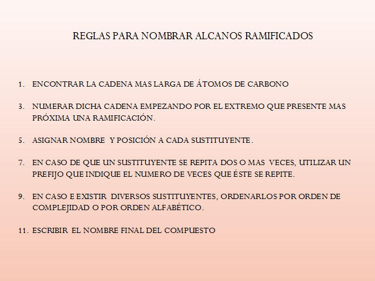
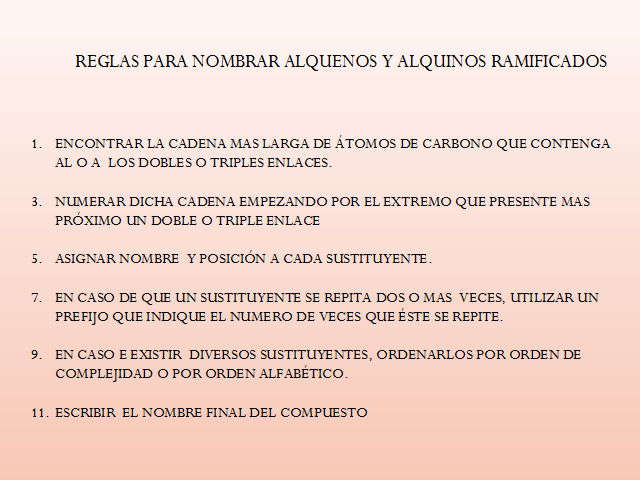

CLASIFICACIÓN:
A) HIDROCARBUROS ALIFÁTICOS:
Los hidrocarburos alifáticos pueden clasificarse en hidrocarburos alifáticos acíclicos y alicíclicos y pueden subdividirse en varios grupos: Alcanos, Alquenos y Alquinos.
Alcanos:
Los alcanos son compuestos con fórmula molecular CnH2n+2. El hidrocarburo más simple es el metano CH4 (n=1). Los hidrocarburos de cadena lineal se denominan hidrocarburos normales.
El alcano más simple es el metano CH4. Desde el siglo pasado se había demostrado mediante hechos experimentales que la estructura del metano tenía una forma tetraédrica. Sin embargo, la justificación de esta estructura no pudo hallarse hasta el desarrollo de la teoría mecanocuántica entre los años 1920 y 1930.
Nomenclatura de los alcanos.
Si todos los hidrocarburos saturados fueran alcanos normales (lineales) se podrían nombrar fácilmente por cualquier método que reflejara el número de carbonos de cada uno de ellos. Sin embargo, los alcanos con más de tres átomos de carbono pueden existir como isómeros estructurales. El criterio básico para nombrar una estructura es elegir el nombre fundamental.

Los alquenos normales con una sola insaturación.
Sus nombres se derivan de los alcanos conforme al mismo número de átomos de carbono de la cadena. Para los alquenos lineales el nombre se obtiene numerando la cadena de la fórmula del compuesto a partir del carbono extremo más cercano a la doble ligadura, cambiando la terminación del nombre del alcano por eno
Alquinos:
Son hidrocarburos que contienen un triple enlace C-C. Se les denomina también hidrocarburos acetilénicos porque derivan del alquino más simple que se llama acetileno. La estructura de Lewis del acetileno muestra tres pares de electrones en la región entre los núcleos de carbono

B) HIDROCARBUROS AROMÁTICOS:
Son moléculas cíclicas, planas, completamente conjugadas que contienen (4n + 2) electrones pi, donde n= 0, 1, 2, 3… Se caracterizan por una estabilidad inusual. Además, no sufren reacciones de adición, que son típicas de los compuestos insaturados. El ejemplo más sencillo de compuesto aromático es el Benceno.
Los compuestos aromáticos se pueden subdividir en compuestos monocíclicos, por ejemplo, el tolueno y policíclicos. A su vez, los compuestos policíclicos pueden resultar de la unión de anillos aromáticos aislados, como el bifenilo, o de la condensación de dos o más anillos aromáticos como el naftaleno.
Además del benceno y de los compuestos con él relacionados (naftaleno, antraceno,…), hay otra serie de compuestos heterocíclicos que son aromáticos. Los compuestos heterocíclicos aromáticos, además de átomos de carbono, contienen en su estructura heteroátomos, que son principalmente nitrógeno, oxígeno y azufre y que pueden implicar un orbital del heteroátomo en el sistema conjugado.